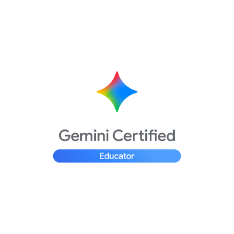
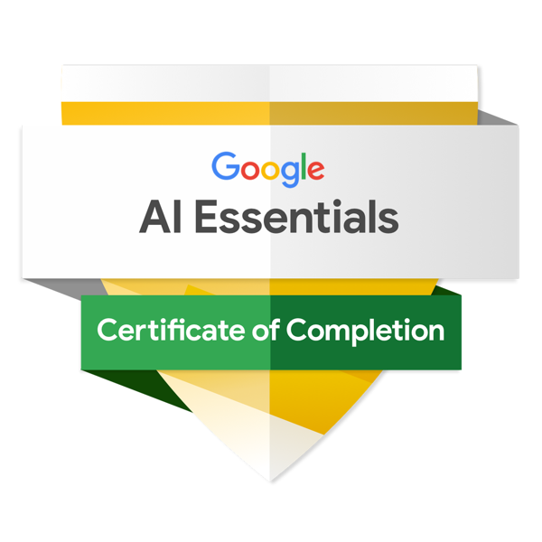
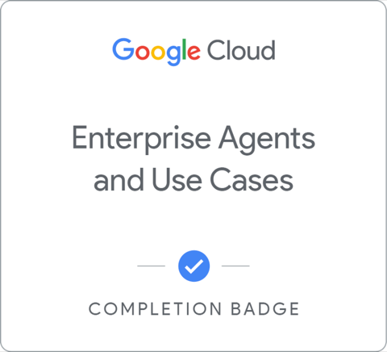
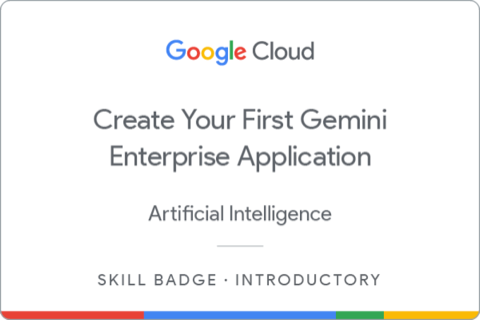

Connect
Getting developers, non-devs, builders, and creators in the same room with each other.
Meet the organizer
Google Developer Expert · Founder & Organizer, GDG Tulsa + GDG Houston
"As an avid Developer Advocate, I'm excited to organize GDG Tulsa to give developers, students, and builders in the Tulsa area a consistent place to work together — heavy on that together — on Google technologies. Not a lecture series. Not a pitch fest. A real space where people show up, learn something, build something, and leave connected to someone new."
Getting developers, non-devs, builders, and creators in the same room with each other.
Hands-on workshops and sessions, not just slides and presentations.
Helping the Tulsa dev ecosystem actually develop, not just exist on paper.
Making people feel like they can build something real, regardless of where they're starting from.
Background
Zain is a Google Developer Expert (GDE) and the founder of The Khanstruct, where he designs, builds, and ships product end to end. He brings that same build-it-yourself approach to organizing GDG Tulsa: recruiting members and speakers, onboarding volunteers, setting culture, and keeping the community consistently shipping events.
End-to-end ownership from user insight to shipped feature; rapid prototyping.
Swift / SwiftUI, macOS, accessibility APIs, AI-assisted development.
Recruiting, onboarding, culture, and events — for GDG Tulsa and GDG Houston both.
Credentials

Google for Education
Foundational knowledge of generative AI concepts and the core features and capabilities of Gemini in an educational context. Valid for 3 years.
Verify credential
Google Career Certificates
Five modules on integrating AI into real work: writing effective prompts, choosing the right AI tool for the task, and using AI responsibly — applied through hands-on activities and assessments.
Verify on CredlyEarned on Google Skills across Gemini, NotebookLM, Google Workspace AI, and agent tooling — the same stack GDG Tulsa teaches.
Agent Fundamentals, Introduction to AI Agents, Enterprise Agents and Use Cases, MLOps for Generative AI, and Vertex AI model evaluation.
Gemini Certified Educator (Google for Education) and Google AI Essentials (Google Career Certificates) — both independently verifiable.






Also on Google Skills: Using the Google Cloud Speech API
2026 so far
The Davenport kickoff, GDG Tulsa Edition, and Find Your Tulsa Tech — intro sessions on Google's AI tools.
Mini BWAI sessions with OklahomAI Developers Tulsa and Tulsa Tech, growing into the flagship Build with AI program with Techlahoma.
GDG Tulsa booth and civic partnership event, building bridges beyond the developer community alone.
Reach out at zain@gdgtulsa.com or join the community below.